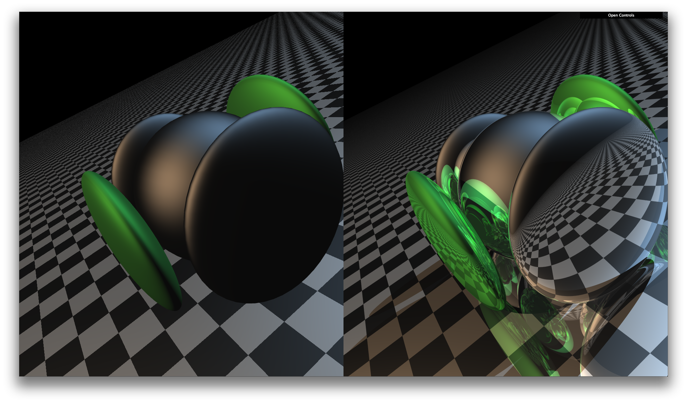

Nice to meet you!
My name is Adrien Tateno. I'm a hacker, student and tech enthusiast. I enjoy learning new programming languages, studying emerging technologies, and taking long and short walks on the beach. The primary computer science topics that interest me are programming languages, machine learning, and computer graphics.
Languages that provide new, powerful tools to programmers and develop a vibrant community, methods that provide graceful solutions to problems with real impact, these are the things that excite me. To name a few specific topics, I am interested in functional programming languages, distributed methods for machine learning, and algorithms for immersive virtual reality.
A Recursive Ray Tracer In JavaScript
Live Demo
A ray tracer written entirely in JavaScript. Uses matrix math libraries and WebGL to render both a polygon-based WebGL image and a ray tracer generated image complete with reflection and bump mapping. Both views implement Phong shading from multiple light sources, however, only the ray traced image renders shadows.